WebGL Deferred Shading
WebGL brings hardware-accelerated 3D graphics to the web. Many features of WebGL 2 are available today as WebGL extensions. In this article, we describe how to use the WEBGL_draw_buffers extension to create a scene with a large number of dynamic lights using a technique called deferred shading, which is popular among AAA games.
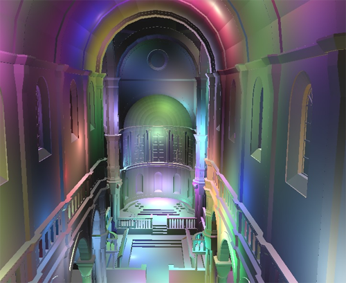
video • live demo • source code
Today, most WebGL engines use forward shading, where lighting is computed in the same pass that geometry is transformed. This makes it difficult to support a large number of dynamic lights and different light types.
Forward shading can use a pass per light. Rendering a scene looks like:
foreach light {
foreach visible mesh {
if (light volume intersects mesh) {
render using shader for this material/light;
accumulate in framebuffer using blending;
}
}
}
This requires a different shader for each material/light-type combination, which adds up. From a performance perspective, each mesh needs to be rendered (vertex transform, rasterization, material part of the fragment shader, etc.) once per light instead of just once, and occluded fragments are still shaded unless front-to-back sorting or a z-prepass is used. In addition, even if a light's volume intersects a mesh, it may only affect a small part of the mesh, but the entire mesh is still rendered.
Forward shading can also use a single pass rendering a scene like:
foreach visible mesh {
find lights affecting mesh;
Render all lights and materials using a single shader;
}
Although meshes are only rendered once, this has the same performance drawbacks for occluded fragments. The biggest drawback is the number of shaders required since a different shader is required for each material/light (not light type) combination. This makes shaders harder to author, increases compile times, usually requires runtime compiling, and increases the number of shaders to sort by.
Deferred Shading
Deferred shading takes a different approach than forward shading by dividing rendering into two passes: one that transforms the geometry and writes positions, normals, and material properties to textures called the g-buffer, and another that performs lighting as a series of screen-space post-processing effects. These are called the g-buffer pass and light accumulation pass, respectively.
// g-buffer pass
foreach visible mesh {
write material properties to g-buffer;
}
// light accumulation pass
foreach light {
compute light by reading g-buffer;
accumulate in framebuffer;
}
This decouples lighting from scene complexity and only requires one shader per material and per light type. Since lighting takes place in screen-space, occluded fragments are not shaded, essentially bringing the depth complexity down to one. There are also downsides such as its high memory bandwidth usage and making translucency and anti-aliasing difficult.
Until recently, WebGL had a roadblock for implementing deferred shading. In WebGL, a fragment shader could only write to a single texture/renderbuffer. With deferred shading, the g-buffer is usually composed of several textures. This means that the scene needed to be rendered multiple times during the g-buffer pass.
WEBGL_draw_buffers
Now with the WEBGL_draw_buffers extension, a fragment shader can write to several textures. To use this extension in Firefox, browse to about:config and turn on webgl.enable-draft-extensions. Then, to make sure your system supports WEBGL_draw_buffers, browse to webglreport.com and verify it is in the list of extensions at the bottom of the page.
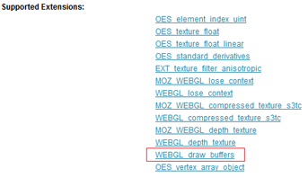To use the extension, first initialize it:
var ext = gl.getExtension('WEBGL_draw_buffers');
if (!ext) {
// ...
}
We can now bind multiple textures, tx[] in the example below, to different framebuffer color attachments.
var fb = gl.createFramebuffer();
gl.bindFramebuffer(gl.FRAMEBUFFER, fb);
gl.framebufferTexture2D(gl.FRAMEBUFFER, ext.COLOR_ATTACHMENT0_WEBGL, gl.TEXTURE_2D, tx[0], 0);
gl.framebufferTexture2D(gl.FRAMEBUFFER, ext.COLOR_ATTACHMENT1_WEBGL, gl.TEXTURE_2D, tx[1], 0);
gl.framebufferTexture2D(gl.FRAMEBUFFER, ext.COLOR_ATTACHMENT2_WEBGL, gl.TEXTURE_2D, tx[2], 0);
gl.framebufferTexture2D(gl.FRAMEBUFFER, ext.COLOR_ATTACHMENT3_WEBGL, gl.TEXTURE_2D, tx[3], 0);
For debugging, we can check to see if the attachments are compatible by calling gl.checkFramebufferStatus. This function is slow and should not be called often in release code.
if (gl.checkFramebufferStatus(gl.FRAMEBUFFER) !== gl.FRAMEBUFFER_COMPLETE) {
// Can't use framebuffer.
// See http://www.khronos.org/opengles/sdk/docs/man/xhtml/glCheckFramebufferStatus.xml
}
Next, we map the color attachments to draw buffer slots that the fragment shader will write to using gl_FragData.
ext.drawBuffersWEBGL([
ext.COLOR_ATTACHMENT0_WEBGL, // gl_FragData[0]
ext.COLOR_ATTACHMENT1_WEBGL, // gl_FragData[1]
ext.COLOR_ATTACHMENT2_WEBGL, // gl_FragData[2]
ext.COLOR_ATTACHMENT3_WEBGL // gl_FragData[3]
]);
The maximum size of the array passed to drawBuffersWEBGL depends on the system and can be queried by calling gl.getParameter(gl.MAX_DRAW_BUFFERS_WEBGL). In GLSL, this is also available as gl_MaxDrawBuffers.
In the deferred shading geometry pass, the fragment shader writes to multiple textures. A trivial pass-through fragment shader is:
#extension GL_EXT_draw_buffers : require
precision highp float;
void main(void) {
gl_FragData[0] = vec4(0.25);
gl_FragData[1] = vec4(0.5);
gl_FragData[2] = vec4(0.75);
gl_FragData[3] = vec4(1.0);
}
Even though we initialized the extension in JavaScript with gl.getExtension, the GLSL code still needs to include #extension GL_EXT_draw_buffers : require to use the extension. With the extension, the output is now the gl_FragData array that maps to framebuffer color attachments, not gl_FragColor, which is traditionally the output.
g-buffers
In our deferred shading implementation the g-buffer is composed of four textures: eye-space position, eye-space normal, color, and depth. Position, normal, and color use the floating-point RGBA format via the OES_texture_float extension, and depth uses the unsigned-short DEPTH_COMPONENT format.
Position texture 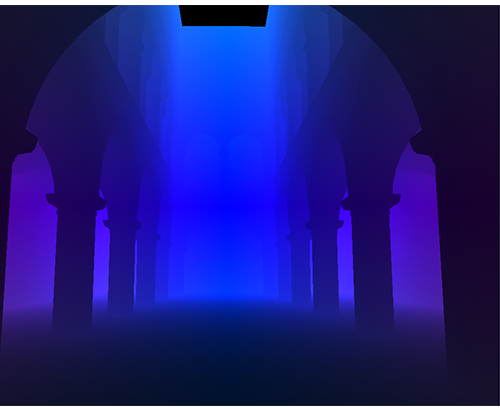
Normal texture 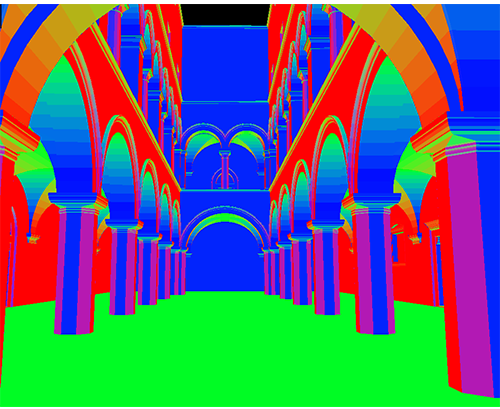
Color texture 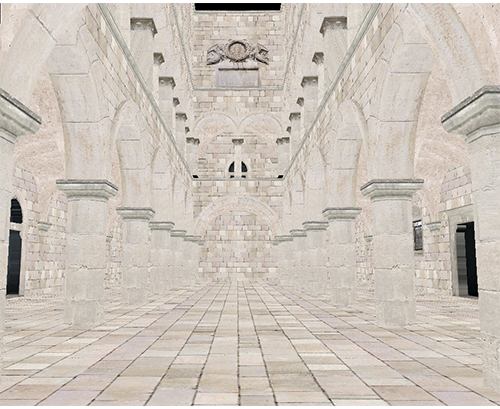
Depth texture 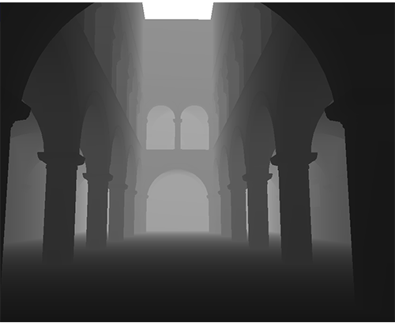Light accumulation using g-buffers 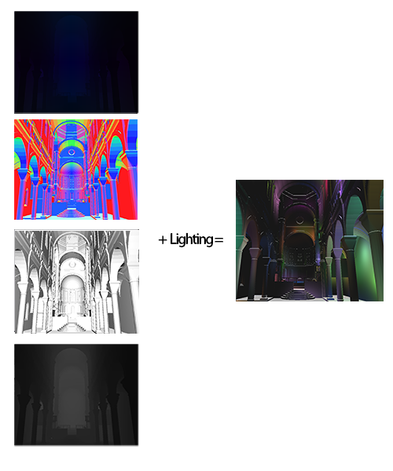
This g-buffer layout is simple for our testing. Although four textures is common for a full deferred shading engine, an optimized implementation would try to use the least amount of memory by lowering precision, reconstructing position from depth, packing values together, using different distributions, and so on.
With WEBGL_draw_buffers, we can use a single pass to write each texture in the g-buffer. Compared to using a single pass per texture, this improves performance and reduces the amount of JavaScript code and GLSL shaders. As shown in the graph below, as scene complexity increases so does the benefit of using WEBGL_draw_buffers. Since increasing scene complexity requires more drawElements/drawArrays calls, more JavaScript overhead, and transforms more triangles, WEBGL_draw_buffers provides a benefit by writing the g-buffer in a single pass, not a pass per texture.
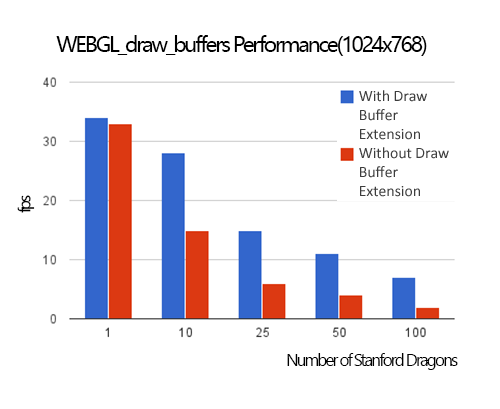
All performance numbers were measured using an NVIDIA GT 620M in FireFox 25.0.1 on Window 8. In the above graph, 20 point lights were used. The light intensity decreases proportionally to the square of distance between the current position and the light position. Each Stanford Dragon is 100,000 triangles and requires five draw calls so, for example, when 50 dragons are rendered, 250 draw calls (and related state changes) are issued, and a total of 5,000,000 triangles are transformed.
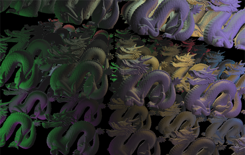 WEBGL_draw_buffers test scene, shown here with 100 Stanford Dragons.
Of course, when scene complexity is very low, like the case of one dragon, the cost of the g-buffer pass is low so the savings from WEBGL_draw_buffers are minimal, especially if there are many lights in the scene, which drives up the cost of the light accumulation pass as shown in the graph below.
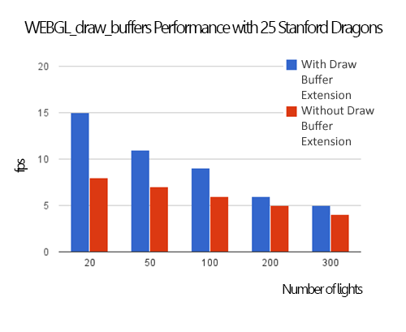
Deferred shading requires a lot of GPU memory bandwidth, which can hurt performance and increase power usage. After the g-buffer pass, a naive implementation of the light accumulation pass would render each light as a full-screen quad and read the entirety of each g-buffer. Since most light types, like point and spot lights, attenuate and have a limited area of influence, the full-screen quad can be replaced with a world-space bounding volume or tight screen-space bounding rectangle.
Tile-Based Deferred Shading
Tile-based deferred shading takes this a step farther and splits the screen into tiles, for example 16x16 pixels, and then determines which lights influence each tile. Light-tile information is then passed to the shader and the g-buffer is only read once for all lights. Since this drastically reduces memory bandwidth, it improves performance. The following graph shows performance for the sponza scene (66,450 triangles and 38 draw calls) at 1024x768 with 32x32 tiles.
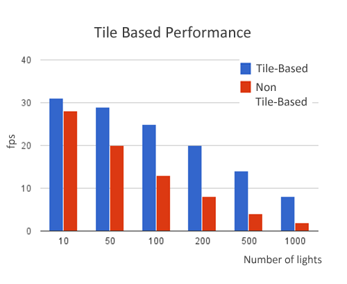
Tile size affects performance. Smaller tiles require more JavaScript overhead to create light-tile information, but less computation in the lighting shader. Larger tiles have the opposite tradeoff. Therefore, choosing a suitable tile is important for the performance. The figure below is shown the relationship between tile size and performance with 100 lights.
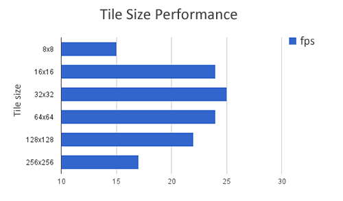
A visualization of the number of lights in each tile is shown below. Black tiles have no lights intersecting them and white tiles have the most lights.

Conclusion
WEBGL_draw_buffers is a useful extension for improving the performance of deferred shading in WebGL. Checkout the live demo and our code on github.
Acknowledgements
We implemented this project for the course CIS 565: GPU Programming and Architecture, which is part of the computer graphics program at the University of Pennsylvania. We thank Liam Boone for his support and Eric Haines for reviewing this article.
References
- Deferred Rendering in Killzone 2 by Michal Valient
- Light Pre-Pass by Wolfgang Engel
- Compact Normal Storage for Small G-Buffers by Aras Pranckevicius
- Tiled Shading by Ola Olsson and Ulf Assarsson
- Deferred Rendering for Current and Future Rendering Pipelines by Andrew Lauritzen